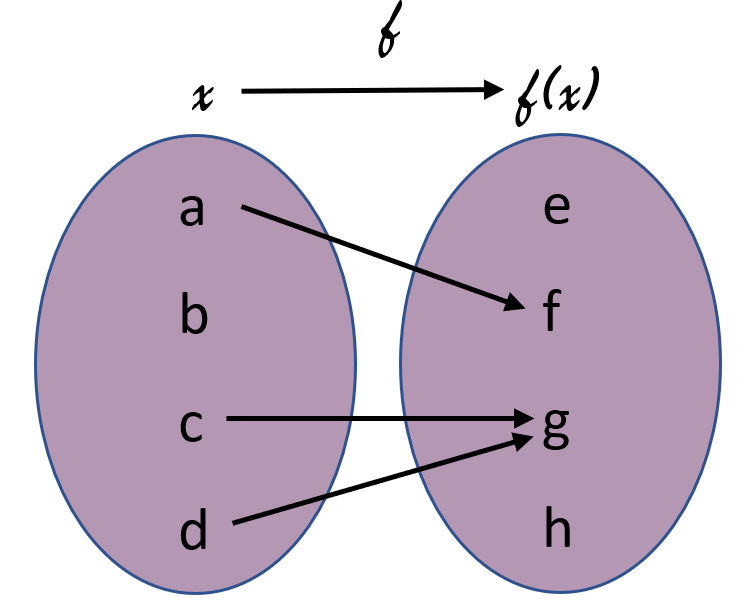

-
Ist die Funktion
f(x) = 3x + 2umkehrbar?Ja, weil seine Umkehrfunktion durch
f-1(x) = x-2/3definiet ist. -
Ist die Funktion
f(x) = x2 + 4umkehrbar?Nein, sie ist nicht komplett umkehrbar.
Es hängt von dem Definitionbereich der Funktion ab. -
Ist die Funktion
f(x) = exumkehrbar?Nein, sie ist nicht komplett umkehrbar.
Es hängt von dem Wertebereich der Funktion ab. -
Welche Eingenschaften hat diese Funktion?
Diese Funktion ist nur surjektiv.
Was ist mein type? -
Welche Eingenschaften hat diese Funktion?
Diese Funktion ist nur injektiv.
 Was ist mein type? -
Welche Eingenschaften hat diese Funktion?
Diese Funktion ist bijektiv.

Was ist mein type? -
Die Umkehrfunktion der Funktion
f(x) = 3x + 7ist ?Die Antwort ist:
f-1(x) = (x-7)/3 -
Die Umkehrfunktion der Funktion
f(x) = -2x - 5ist ?Die Antwort ist:
f-1(x) = -(x+5)/2oderf-1(x) = (-x-5)/2 -
Die Umkehrfunktion der Funktion
f(x) = 3x / 7ist ?Die Antwort ist:
f-1(x) = 7x/3
Drag and drop die Bilder, um die Umkehrfunktion der Funktion
f(x) = (28x + 4)/4 zu erhalten
Die Antwort ist: f-1(x) = (x-1)/7
Grund: 4 ist den ggt von 4 und 28. Deswegen gibt es kein 4
mehr.